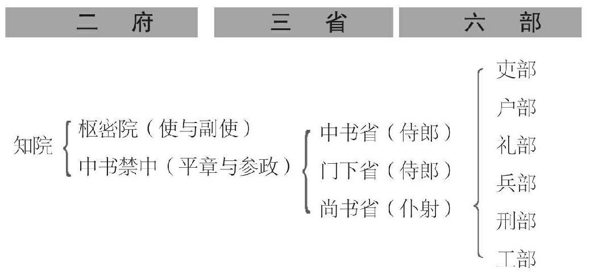
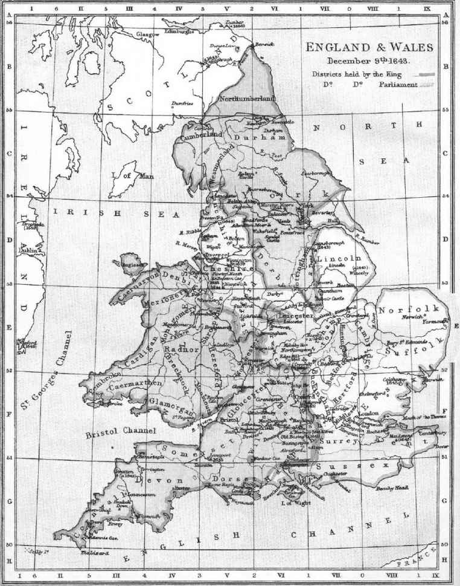
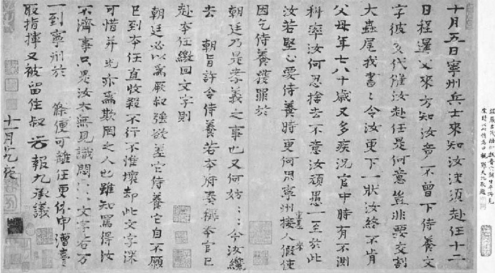
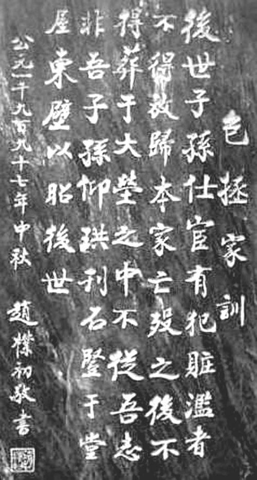
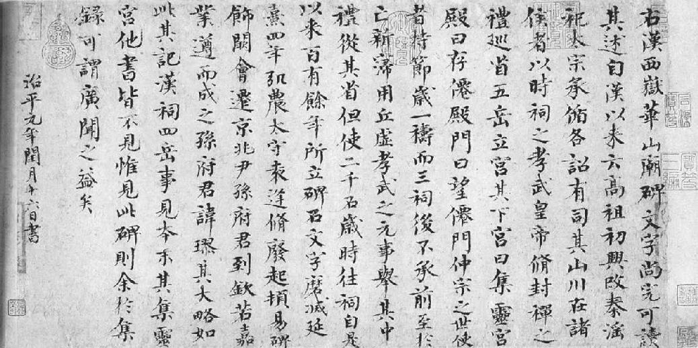
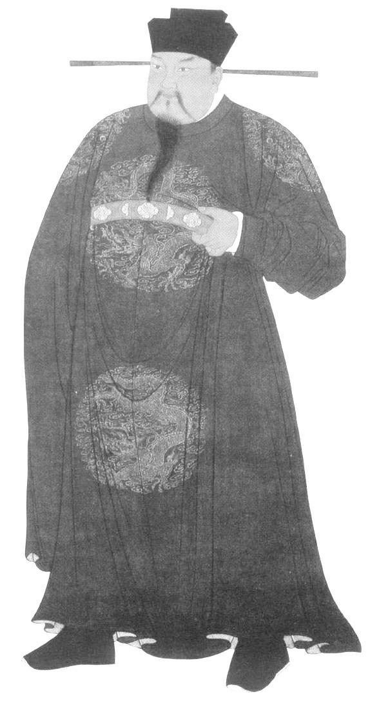

第八章 拗相公
一场政治风暴现在刮起来了，就要引起燎原的大火，会把宋室焚毁。这场风暴始于国家资本主义者，人称“拗相公”的王安石，和他的反对派之间的一次斗争。王安石的反对派包括所有的其他官吏，也就是贤德的仁宗皇帝，在思想自由的气氛中拔擢培养，留作领导国政的一代人才。我们需要了解那次政争的性质，因为那种朋党之争笼罩了苏东坡的一生。
中国最早的通俗文学至今尚存在者，其中有一篇预示中国小说的来临，是一个短篇小说，叫《拗相公》。那是宋朝通俗文学作品，新近才发现，这足以表示，王安石死后不久，在通俗文学之中，他便以其外号为人所知了。那场政争的悲剧之发生，就由于一个人个性上的缺点，他不能接受忠言，他不愿承认自己犯错。朋友对王安石的反对只增强了他贯彻他那政策的决心。有人告诉我们，说个性坚强是一种重要的美德，但是却需要予以精确的说明，就是说坚强的个性是用去做什么事。王安石很可能还记得学生时代曾听见一个平常的格言，说“决心”为成功的秘诀，自己却把固执当作那种美德了。王安石在世时，他在文学界是以“三不足”为人所知的。“三不足”就是“天命不足畏，众言不足从，祖宗之法不足用”（《宋史·王安石传》为“天变不足畏，祖宗不足法，人言不足恤”，未言及苏轼所赠。或出于某宋人笔记--编者注）。这是苏东坡赠予他的标志。
这位“拗相公”不容任何方面有人反对，朋友方面，或是敌人方面。他能言善道，能说动皇帝相信他的强国之策，决心要把他的计划进行到底。这就暗示他要压制一般的反对意见，尤其是谏官的话，谏官的职责本来就是批评朝廷的政策和行动，并充当舆论与朝廷之间的桥梁。中国政治哲学的基础，是好政府必然是“广开言路”，而坏政府则不然。所以开始论到新政之后，自然争论迅即涌向一个更基本的问题，就是批评与异议的自由。这次交战，宰相王安石赢了第一回合。但是此后，全国官员分成了两个阵营，陷于朋党之争，直到宋朝灭亡而后已。几年之后，变法方案即遭修正，或予中止，但是两派的裂痕则演变愈甚，其后果亦更加严重。
在朝廷上此一政争，成了“流俗”与“通变”之争，这两个名称在当代文学里曾多次出现，而王安石亦最喜爱用。凡是王安石所不喜，或与王安石持异议者，王安石皆称为“流俗”派，而他与其同党则称为“通变”派。王安石攻击批评者，说恶意阻挠新政。在另一方面，反对派则攻击他，说他“视民间清论为流俗，视异己者为腐败”。刘挚则称：“彼以此为流俗，此以彼为乱常。”王安石这位宰相排斥反对他的御史之时，反对派对他的更重要攻击，是他欲“钳人口”，也就是使天下人不得批评政府。
中国政府从来没有发展出一个党治的组织，并划分出当政党与反对党大家公认的权利与责任。没有计票、举手、表示是否，或其他确定公众意见的方法。中国人在集会时，只是讨论问题，然后同意某一决定。在原则与实际上，对政府政策之批评，政府不但容许，亦且予以鼓励。敌方可推翻内阁，或申谢而退去。每有朋党之争，习惯上是将反对派放出京都，到外地任职，甚至在仁宗和英宗时，政府颇负盛名的领导人物，如范仲淹与欧阳修，都曾贬谪至外地，暂时退居低位，后来又回京得势。在这种情况之下，一派当权，则另一派退避。
朝内的争论在宋朝演变得越发激烈，是由于宋朝的政府组织制度的特殊所致，因为宋朝对宰相的职权没有明确的规定，内阁很像个国会，由皇帝掌握平衡之权。政府由复杂、拙笨的连锁机构组成，功能重复，最后决定的大权仍然在皇帝手中。当时所谓宰相，只是个交际上的称呼而已，实际名称为“同中书门下平章事”。也许有两位副宰相。一般组织如下：
户部（财政）完全独立，直接对皇帝负责。御史台独立。另有各机构，只供做赠予空衔之用。通常，“宰相”兼中书省侍郎与门下省侍郎。三省各长官和枢密院长官构成知院，称为“知政”。后来，神宗锐予改变，意在简化此一组织制度，权责区划较为分明。门下省司研讨命令，中书省（宰相府）司发布，尚书省司执行。但是纷乱与权责分散，依然如故。
英格兰--现代政党的发源地 地图 1643年 英国
19世纪以来，人们的参政需求主要是通过政党来实现。近代政党产生的目的就是为了将社会上纷繁芜杂的个人和小团体的诉求整合为明确的政治诉求。但北宋年间大规模的党争自王安石变法正式开始，由最初士大夫之间的政见分歧逐步演化为党同伐异、喜同恶异的纯粹的意气之争。
王安石最初只是个参知政事（副宰相），但因受皇帝支持，擅自越权进行变法计划，与吕惠卿、曾布私下决定一切。这自然在神宗驾前和各知政易于发生争论。主要问题只有两个：一个是青苗贷款法，一是御史的言论自由一事。一方面是元老重臣干练有才之士，人数之众，几乎构成了全体；另一方面，只有一个人--王安石，但有神宗支持，及另一批默默无名的小人，野心大，精力足，阴险而诡诈。为了便于参考，并免于许多人名的累赘，下面列有政争中较重要之人名，以见双方之阵容：
王安石（拗相公）
神 宗（雄心万丈的皇帝）
曾 布（活跃的政客）
吕惠卿（声名狼藉，后出卖王安石）
李 定（母丧不奔，后弹劾苏东坡）
邓 绾（两面人，先后服侍吕惠卿和王安石）
舒 亶（与李定同弹劾苏东坡）
王 雱（王安石之子）
谢景温（王安石姻亲）
蔡 卞（王安石女婿）
章 惇（后为苏东坡敌人）
吕嘉问（王安石手下的贸易霸主）
司马光（反对派之首，大史学家）
韩 琦（元老重臣）
富 弼（老臣）
吕 诲（第一个发动攻击的人）
曾公亮（脆弱人物）
赵 抃
文彦博（老好人）
张方平（元老重臣，苏家“叔伯”辈好友）
范镇（元老重臣，苏家“叔伯”辈好友）
欧阳修（元老重臣，苏家“叔伯”辈好友）
苏东坡
苏子由（东坡之弟）
范仲淹（伟人）
孙 觉（高俊，易怒，东坡密友）
李 常（矮壮，东坡密友）
刘 恕（性火暴，东坡至交）
吕公著（美髯，曾与王安石为友）
韩 维（出自世家，曾为王安石好友）
程 颢（理学家，“二程”中的长兄）
王安礼（王安石弟）
王安国（王安石弟）
刘 挚（独立批评者，后与东坡为敌）
苏颂（熙宁中三学士）
宋敏求（熙宁中三学士）
李大临（熙宁中三学士）
其他御史
郑 侠（负重任之宫廷门吏，王安石因他而败）
此一极不平衡的阵容既令人悲，又令人笑。一看此名单，令人不禁纳闷王安石化友为敌的才气，以及神宗宠用王安石所付代价之大，因为所有对新政持异议者皆遭撤职，罢官议罪。最后，神宗又不得不罢斥王安石、吕惠卿、邓绾诸人。他的强国梦破灭了，只落得统治一群庸才之臣。倘若说知人善任为“神圣”的特性，“神”宗这个谥号，他是当之有愧了。
王安石的悲剧在于他自己并不任情放纵，也不腐败贪污，他也是迫不得已。要把他主张的国家资本计划那么激进、那么极端的制度付诸实施，必得不顾别人的反对。也许这就是他隐退以待时机如此之久的缘故。他有一个幻象，而他的所作所为都以实现这个光辉灿烂的幻象为依归，他之所求不是太平繁荣的国家，而是富强具有威力的国家，向南向北，都要开拓疆土。他相信天意要使宋朝扩张发展，一如汉唐两代，而他王安石就是上应天命成此大业之人。但是在后世的历史学家的沉思默想之中，此等上应天命的人无一不动人几分感伤--永远是个困于雄心而不能自拔的人，成为自己梦想的牺牲者，自己的美梦发展扩张，而后破裂成了浮光泡影，消失于虚无缥缈之中。
王安石轻视所有那些“流俗”之辈，不但与那些忠厚长者大臣一等人疏远起来，就连自己的莫逆之交，如韩维、吕公著也断绝了来往。我们还记得神宗尚身为太子之时，是韩维使太子对王安石倾心器重的。等这些朋友对他推行新政的方式表示异议时，他毫不迟疑，立刻把他们贬谪出京。他既陷于孤立无援，就拔擢些不相知的“才不胜职”之辈，而这些人只是对他唯唯诺诺、毕恭毕敬，实际上利用他以遂其私欲。三个劣迹昭彰的小人是李定、舒亶、邓绾。李定隐瞒母丧不报，以免辞官，退而居丧返里，在儒教社会中这是大逆不道的。邓绾之为后人所知，是他说了一句名言：“笑骂从汝，好官须我为之。”但是王安石的两个巨奸大恶的后盾人物，则是两个极端活跃、富有险谋才干又极具说服能力的小人：曾布和吕惠卿，尤以吕惠卿为甚，最后他想取王安石的地位而代之，又把王安石出卖了。王安石八年新政终于崩溃，可以一言以蔽之曰：“吕惠卿出卖了王安石，王安石出卖了皇帝，皇帝出卖了人民。”在吕惠卿以极卑鄙的手段公布王安石的私信，以离间他和皇帝之时，王安石便垮了。王安石晚年每天都写“福建子”三个字数次，用以发泄心中的愤怒，因为出卖他的这个朋友吕惠卿是福建人。王安石失败之后，苏东坡一天在金陵遇见他，斥责他发动战争迫害文人之罪，王安石回答说吕惠卿当负全责。此不足以为借口，因为王安石本人坚持严酷对付反对派，而且在熙宁四年四月至六年七月吕惠卿因父丧去职期间，王安石在京师用以侦察批评朝政的特务机构成立了。
此外，相反两派的领袖王安石和司马光虽然政见不同，不能相与，但皆系真诚虔敬、洁身自好之士。在金钱与私德上从未受人指责，欧阳修则至少在家庭生活上曾传有暧昧情事。
有一次，王安石的妻吴氏为丈夫置一妾。等此女人进见时，王安石惊问道：“怎么回事？”
女人回答说：“夫人吩咐奴婢伺候老爷。”
王安石又问：“你是谁？”
女人回答道：“奴家的丈夫在军中主管一船官粮，不幸沉船，官粮尽失。我们家产卖尽，不足以还官债，所以奴家丈夫卖掉奴家好凑足钱数儿。”
王安石又问：“把你卖了多少钱？”
“九十万钱。”
王安石把她丈夫找到，命妇人随同丈夫回去。告诉她丈夫不必退钱。
这种情形司马光也曾遇见过，因为他在勉强之下纳了一个妾。他年轻时曾官居通判，而妻子未能生育儿子。太守夫人赠送他一妾，司马光不理不睬。妻子以为是自己在跟前的缘故。一天她告诉那个侍姬等她自己离家之后，打扮妥当，夜间到老爷书房去。司马光看见那一女子在他书房中出现，惊问道：“夫人不在，你胆敢来此？速去！”随即让她离去。王安石和司马光都志在执行自己的政策，而不在谋取权力地位，而且王安石对金钱绝不重视。他做宰相时，一领到俸禄，就交给弟兄们，任凭他们花费。
《资治通鉴》手稿 文稿 司马光 宋
司马光（1019-1086），我国北宋时期重要的文学家、历史学家、政治家。他最为世人称道的是辉映千古的史学巨著《资治通鉴》，开创了时经事纬的编年体通史的范例。司马光的政治主张虽然偏于保守，但王安石变法中出现的偏差和用人不当等情况却从侧面证明司马光在政治上还是老练稳健的。
司马光，道德才智，当代罕见其匹，由始至终是光风霁月胸怀，争理不争利。他和王安石只是在政策上水火不相容。当代一个批评家曾说：“王安石必行新政始允为相，司马光必除新政始允为枢密副使。”
司马光为宋朝宰相，其为人所崇敬，不仅与范仲淹齐名，他还是包罗万有的一部中国史（至五代）《资治通鉴》的作者。这部书全书二百九十四卷，附录考异三十卷，学富识高，文笔精练，为史书中之北斗，后世史学著作之规范。初稿（长编）多于成书数倍。他写作此书时，一直孜孜不懈，每日抄写，积稿十尺，最后全稿装满两间屋子。此空前巨著费去作者二十五（实为十九年--编者注）年工夫。
最先引起争论的问题，是青苗法。在制置三司条例司研讨数月之后，青苗法终于在神宗熙宁二年（一〇六九年）九月公布。朝廷派出四十一位专使大员，到各省去督导实施新法。不久之后，即分明显示官家款项并不能如预先之估计可由人民自行贷出。专使所面临之问题即是：径行还京陈明使命未能达成，抑或勉强人民将款贷去而回京禀报新政成功。官家愿将款项借予富户，以其抵押较为可靠，但富户并不特别需要借款。贫户急需借款，但官家必须取得抵押，因知其无还债能力。有些特使乃思得办法，按人民之财力，自富至贫，将官款定比分配。但是贫户太贫，实在无力借款，只有富户可借--这正是现代银行财务事业的基本特性。官方要做到贫户确能归还贷款，于是使贫户之富有邻居为之作保。一个特使向京都的报告中说：官方把贷款交与贫户时，贫户“喜极而泣”。另一个特使不愿强民借贷，回京报告大不相同。御史弹劾放款成功的特使，说他强民借贷，大违朝廷之本意。王安石亲自到御史台对诸御史说：“你们意欲何为？你们弹劾推行新政的能吏，却对办事不力者默不作声。”
韩琦那时驻在大名府，官居河北安抚使，亲眼看到了青苗法实行的情形，他向皇帝奏明青苗贷款是如何分配出去的。若与苏东坡的火暴发作相比，韩琦的奏折可以说是顾虑周详，措辞妥帖，言之有物，真不愧是个极具才干、功在国家的退职宰相的手笔。在奏折上他说，甚至赤贫之民也有分担的款额，富有之家则要求认捐更多。所谓青苗贷款也分配给城市居民负担，也分配给地主和“垄断剥削者”，须知这两种人正是青苗法所要消灭的。不可不知的是，每借进一笔钱，短短数月之后就要付出一分半的利息。不论朝廷如何分辩，说贷款与民不是以营利为目的，百姓都不肯相信。韩琦指出，纵然阻止强迫贷款，要力行自愿贷款，并无实际用处，因为富户不肯借，穷人愿借，但无抵押；最后仍须保人还债。同时，督察贷款的特使急于取悦于朝中当权者，低级官吏又不敢明言，韩琦说，他自思身为国家老臣，势不得不将真相奏明皇帝。他请朝廷终止新法，召回特使，恢复故有的常平仓制。
和王安石讨论韩琦的奏折时，皇帝说：“韩琦乃国之忠臣，虽然为官在外，对朝廷仍是念念不忘。我原以为青苗法会有利于百姓，没料到为害如此之烈。再者，青苗贷款只用于乡村，为何也在城市推销？”
王安石立即回奏道：“有什么害处？都市的人倘若也需要贷款，为什么不借给他们？”于是韩琦和朝廷之间奏批往返多次，这位退位的宰相明确指出汉朝所一度实行的国家资本制度的影响，那样榨取民脂民膏以充国库而供皇帝穷兵黩武，并不足以言富国之道。这就动摇了王安石的地位，皇帝开始有意终止青苗法。王安石知道了，遂请病假。司马光在提到王安石请病假时说：“士夫沸腾，黎民骚动。”大臣讨论此一情势，赵抃当时还拥护王安石，主张等王安石销假再说。那天晚上阁员曾公亮派他儿子把政局有变的情形去告诉王安石，告诉他要赶快销假。得此密告，王安石立即销假，又出现在朝廷之上，劝皇帝说反对派仍然是力图阻挠新政。
皇帝也不知如何是好，乃派出两个太监到外地视察回报。两个太监也深知利害，回报时说青苗法甚得民心，并无强迫销售情事。老臣文彦博反对说：“韩琦三朝为相，陛下乃信太监之言而不信韩琦吗？”但是皇帝竟坚信自己亲自派出之使者，决心贯彻新政。几名愚蠢无知、毫不负责的查报人员不知自己说的几句话竟会对国家大事发生了影响，这种情形何时是了！倘若那几个阉宦还有男子汉的刚强之气，这时肯向皇帝据实回奏，宋朝的国运还会有所改变。他们只是找皇帝爱听的话说，等时局变化，谈论“土地改革”已不再新鲜，他们也羞臊得一言不发了。
司马光、范镇，还有苏东坡三个人并肩作战。司马光原对王安石颇为器重，他自己当然也深得皇帝的信任。皇帝曾问他对王安石的看法。他说：“百姓批评王安石虚伪，也许言之过甚，但他确是不切实际，刚愎自用。”不过，他的确和王安石的亲信小人吕惠卿在给皇帝上历史课时，发生了一次激烈的争辩，甚至需要皇帝来打断，要他二人平静下来。司马光既然反对他的政策，王安石开始厌恶他。王安石请病假如此之短一段时期之中，神宗皇帝打算使司马光充任枢密副使。司马光谢绝不就，他说他个人的官位无甚重要，重要的是皇帝是否要废止新政，司马光九次上奏折。皇帝回答说：
“朕曾命卿任枢密副使主管军事。卿为何多次拒不受命，而不断谈论与军事无关之事？”
司马光回奏称：“但臣迄未接此军职。臣在门下省一日，即当提醒陛下留意此等事。”王安石销假之后，他的地位又形巩固，他把司马光降为知制诰。范镇拒发新命，皇帝见范镇如此抗命，乃亲手把诏命交予司马光。范镇因此请辞门下省职位，皇帝允准。王安石既复相位，韩琦乃辞河北安抚使，只留任大名府知府，皇帝照准。苏东坡怒不可遏。他有好多话要说，而且非说不可，正如骨鲠在喉，不吐不快。他之坦白直率，是断然无疑的。那时，他只三十二岁，任职史馆，官卑职小，且只限于执笔为文，与行政毫无关系。他给皇帝上奏折两次，一次是在熙宁三年（一〇七〇年）二月，一次是在次年二月。两次奏折都是洋洋洒洒，包罗无限，雄辩滔滔，直言无隐。犹如现代报上偶尔出现的好社论文章一样，立即唤起了全国的注意。在第一篇奏折上，一开首就向青苗法攻击。他告诉皇上全国人已在反对皇上，并说千万不可凭借权力压制人民。文章之中他引用孔夫子的话说：
百姓足，君孰与不足？……臣不知陛下所谓富者，富民欤，抑富国欤？
是以不论尊卑，不计强弱，理之所在则成，理所不在则不成，可必也。今陛下使农民举息，与商贾争利，岂理也哉，而何怪其不成乎？……陛下苟诚心乎为民，则虽或谤之而人不信；苟诚心乎为利，则虽自解释而人不服。且事有决不可欺者，吏受贿枉法，人必谓之赃；非其有而取之，人必谓之盗。苟有其实，不敢辞其名。今青苗有二分之息，而不谓之放债取利，可乎？……今天下以为利，陛下以为义；……天下以为贪，陛下以为廉。不胜其纷纭也。
他又警告皇帝说：
盖世有好走马者，一为坠伤，则终身徒行。……近者青苗之政，助役之法，均输之策，并军搜卒之令，卒然轻发，又甚于前日矣。……今陛下春秋鼎盛，天锡勇智，此万世一时也。而群臣不能济之以慎重，养之以敦朴，譬如乘轻车、驭骏马，冒险夜行，而仆夫又从后鞭之，岂不殆哉！臣愿陛下解辔秣马，以须东方之明，而徐行于九轨之道，甚未晚也。
苏东坡又警告皇帝说，若以为用专断的威权必能压制百姓，则诚属大错。多少官吏已然降级或革职，甚至有恢复肉刑之说。他接着又说：
今朝廷可谓不和矣。其咎安在？陛下不返求其本，而欲以力胜之。力之不能胜众也久矣。古者刀锯在前，鼎镬在后，而士犹犯之。今陛下躬蹈尧舜，未尝诛一无罪。欲弭众言，不过斥逐异议之臣而更用人，必不忍行亡秦偶语之禁，起东汉党锢之狱，多士何畏而不言哉？臣恐逐者不已，而争者益多……陛下将变今之刑而用其极欤？天下几何其不叛也？
今天下有心者怨，有口者谤。古之君臣相与忧勤以营一代之业者，似不如此。古语曰：“百人之聚，未有不公。”而况天下乎！今天下非之，而陛下不回，臣不知所税驾矣。《诗》曰：“譬彼舟流，不知所届。心之忧矣，不遑假寐。”区区之忠，唯陛下察之。臣谨昧死上对。
使朝廷文武百官最为激动的莫如王安石之清除御史台。最初，王安石的威吓朝廷百官，倒不是以他那极端而广泛的经济政策，而是他对胆敢批评他的御史，凭他狂妄的习惯，一律撤职。于是批评朝政之权受到了摧残，政府组织的基础受到了破坏，这样就触动了政体最敏感部分。官场全体为之大惊失色，王安石自己的朋友也开始背弃他。
单以排除御史台的异己一事，就足以削弱对他的支持力量，也引起朝廷领袖的纷萌退意。在中国，监察制是朝廷一个历史悠久的制度，其作用就是代表舆论时时对当政的政权予以控制或批评。在一个好政府里，监察机构必须能随时对皇帝进诤言，向皇帝反映舆论，这种重要性是不可忽视的。由于其地位如此之重要，监察机构既有重大力量，亦有重大责任，御史如对当权者做强有力的攻击，可以把一个政权推翻。这种监察作用在政府的人事和政策上可以引起变动，不过其方法并未明确予以规定，其作用与现代的新闻舆论大致相似。古代此种制度之异于今日者，就是此等监察机构及其反对权，并无明文规定受有法律保障，只是传统上认为明主贤君应当宽宏纳谏，至于皇帝重视他那明主贤君的名誉与否，那就是他自己的事了。倘若他不克己自律，他可以降旨把御史降级、惩处、折磨，甚至全家杀害。有些皇帝确是如此。身为御史者在个人毫无法律保障之下，却要尽职责向朝廷与皇帝进谏规劝，处境是既难又险。但是像现代，总有对公众抱有责任感的新闻杂志编辑，不惜冒监禁死亡之险而向极权政权挑战的，在过去也总有御史受皮肉之苦、鞭笞之痛，甚至死亡之威胁，而尽其于人民之职责，尤其在东汉与明朝两代，当时有御史，写好弹劾奸相的本章，自料必死无疑，在本章呈递与皇帝之前，先行自缢身死。这些御史正如武士之上战场，前仆后继。好皇帝自己爱惜名誉，对于这等御史的处理颇为慎重，因此甚获美誉而得人望，但是恶人当政则急于塞御史之口，正如现代之专制暴君，总以钳制报章杂志之口为急务。
王安石当政之始，元老重臣对他颇寄厚望。现在御史中丞吕诲向王安石发出了第一弹，说他“执邪见，不通物情。置之宰辅，天下必受其祸”。连司马光都深感意外。在吕诲同司马光去给皇帝讲解经典之时，吕诲向司马光透露那天早晨他打算要做的事，从袖子里把那件弹劾表章给司马光看。
包拯家训 碑刻 赵朴初 1997年
中国历史上最著名的御史肯定非包拯莫属了。他在仕途期间，虽没有同朝为官的欧阳修、范仲淹、苏轼等在文学史上的辉煌地位和政治上的坎坷经历，但他为人做官的品行道德和正直名节在民间广为流传。包拯故后，获得了仁宗御赐“忠贤将相，道德名家”的极高评价。
司马光说：“吾等焉能为力？他深得人望。”
吕诲大惊道：“你也这么说！”
吕诲遭受革职，于是排除异己开始了。
现在朝廷政争由星星之火变成了熊熊之势。有一妇人企图谋杀丈夫，但仅仅使她丈夫受伤而未克致命。此一妇人曾承认有谋杀之意，当时众官对处治之刑罚歧见纷纷。此一案件拖延一年有余，未能定案。司马光要以一种方式判决，王安石要另一种方式，而且坚持己见。皇帝的圣旨对此案的处刑做出指示，但是御史刘恕则拒不同意，要求再审--御史如此要求，亦属常事。这是第二名违逆王安石意旨的御史，王安石则令自己的一个亲信弹劾他。这样一来，一场争斗便化暗为明。
御史台则群情激动。问题现在是仍要在不受限制之下自由尽责呢，还是等候逐一被人清除？几位御史乃联名上书弹劾王安石，请求罢黜其相位。王安石大怒，欲将此数人投诸监狱而后快。司马光与范纯仁认为基本上不可如此对待御史，最后六个御史遭贬谪至边远外县充任酒监。一见情形如此，范纯仁起而应战。他要求贬谪御史之成命必须撤回，结果他自己也遭流放。下一个要倒下去的是苏东坡的弟弟苏子由，他一直就反对青苗法和均输法。两个月之后，忠厚长者老臣富弼向朝廷辞职归隐，临去警告说，在任何政治斗争中，正人君子必败，而小人必占上风，因为正人君子为道义而争，而小人则为权力而争，结果双方必各得其所，好人去位，坏人得权。他预言国家大事若如此下去，国家行将大乱矣。朝廷之上，现在是一片骚乱。神宗熙宁二年（一〇六九年）二月，制置三司条例司成立，七月实行均输法，九月实行青苗法。数月之内，众人对当权者的意见，由期待而怀疑，由怀疑而迷惑，由迷惑而愤怒、恐惧。
现在情势变化甚速。熙宁三年（一〇七〇年）三月与四月，御史台大规模遭受整肃，随即大规模布置上新人。随后倒下的两个御史都是王安石个人的朋友，都曾助他获得权力，王安石也是倚为声援的。身材颀长、性情暴躁又富有口才的孙觉--他也是苏东坡毕生的友人--曾经向王安石发动论争，因为王安石坚称周朝的钱币机构曾经以百分之二十五的利息把钱借给人民，他对此说表示反对。王安石仍然希望得到他的支援，派他到外地调查为什么当时盛传朝廷强迫贷款与农人，甚至在京畿一带也传闻如此。孙觉回到京师，老老实实报告确有强迫销售情事。王安石认为他这是出卖朋友--所以孙觉也被革职。更为重要的案子是“美髯公”吕公著的案子。吕公著是宰相之子，学识渊博，但是沉默寡言。在早年，王安石和吕公著在文学上同享盛名，同为儒林所敬佩。吕公著曾帮助王安石位登权要，王安石乃使他官拜御史中丞，作为回报。现在吕公著上神宗皇帝的奏议中，文字未免过于辛辣，使王安石大为不快，在文中他问：“昔日之所谓贤者，今皆以此举为非，岂昔皆贤而今皆不肖乎？”王安石亲拟罢斥吕公著的诏书，用字措辞正好流露他自己喜怒无常的特性。在二人交好之日，王安石曾向皇帝说：“吕公著之才将来必为宰相。”而今他把吕公著比作了尧舜时的“四凶”。
最使曾佩服他的人与之疏远的原因，就是在同一个月内，王安石派了两个劣迹昭彰的小人进入御史台，去填补他排挤出来的空缺。他之派李定为全权御史，在御史台引起了群情激愤。李定既没考中科举，也没有为官的其他必要资格。他教人知道的反倒是他隐瞒母丧不守丧礼一事。在中国人心目中，这简直是败德下流至于禽兽。王安石把他升到那么崇高的地位，只是因为自乡间来京后，他言及青苗法极受人民欢迎，王安石把他向皇上引荐，好向皇上陈奏。这件事使御史们怒不可遏。同时，王安石又把亲戚谢景温升为御史。谢为求升发，把自己的妹妹嫁与王安石的弟弟。有三个御史反对朝廷的此一任命诏书，三个人一起丢官。其余的御史对此事还照旧坚持。张戬请求将三个御史官复原职，并罢斥王安石的心腹李定与吕惠卿。在张戬到中书省去催办此一案件时，他发现王安石心情古怪。只是听他叙述，自己则一言不发，用扇子掩着嘴，一味大笑。
张戬说：“我想你一定正笑我愚蠢。但是你要知道，全国老百姓笑你的正多着呢。”这时另一位遭到牺牲的御史是程颢，他是宋朝理学家“ 二程”之中的兄长大程。在新政推行之初，他曾经与王安石合作。现在他也到中书省为那同一个案子向王安石争论。王安石刚看了他的奏折，程颢看到他正怒气难消。这位理学大家以颇有修养的风度对他说：“老朋友，你看，我们讨论的不是个人私事或家事，我们讨论的是国事。难道不能平心静气说话吗？”从儒家的道德修养看，王安石觉得很丢脸，很难为情。
一两个月的光景，御史台的清除异己便已告完成。连去年所罢黜的御史在内，王安石清除的御史一共达到了十四人，十一名是御史台的人，三名是皇宫中的谏官。司马光向皇帝曾经痛陈利害。只有三个人，就是王安石、曾布、吕惠卿，赞成新政，朝廷百官无不反对他们三个人。“难道皇上就只用这三个人组织朝廷？就用这三个人治理国家吗？”韩琦和张方平已在二月告老还乡，司马光对枢密副使一职拒而不受，当月也遭贬降，范镇已经大怒而去。在九月，举棋不定的赵抃--他这位内阁大臣一度想讨好这群新贵--决定辞职。他也指出“青苗使者于体为小，而禁近耳目之臣用舍为大”。数月之后，年老信命毫无火气的曾公亮把王安石之得势归之于天意，以年老多病为由，在极不愉快之下，请求去职，其实多少也是受批评不过而走的。在神宗熙宁三年（一〇七〇年），王安石正式出任相职，在整个政府中其权位凛乎不可侵犯。次年六月，欧阳修辞去朝廷一切职位，退隐林泉。
苏东坡现在写他那《上神宗皇帝万言书》，准备罢官而去。他和司马光、范镇曾经并肩作战，但是司马光与范镇已经在愤怒厌恶之下辞去官职。范镇后来和苏东坡有了亲戚关系，他曾在前两朝任职于中书省。其人虽然外貌看来肥胖松软，个性之强则不让钢铁。在去职之时，他在辞呈上说：“陛下有纳谏之资，大臣进拒谏之计；陛下有爱民之性，大臣用残民之术。”在早朝之时，皇帝将此奏折交与王安石看，王安石的脸立刻煞白。当时在附近的几个人说曾看见王安石拿着此奏折在手，手气得发抖。
在熙宁三年（一〇七〇年）九月，司马光被派到外地陕西去做外任官，但是他留恋京都不忍去。他和王安石诚恳但有时很严肃认真地讨论新法，书信来往凡三次之后，才与他完全决裂。皇帝原先仍希望他在朝为官，数次告诉其他大臣说，只要司马光在身边，他不会犯什么大错。皇帝再三再四召他回朝，司马光都予谢绝。他的话早已说够，皇帝若不肯察纳忠言而终止骑此刚愎的蛮驴奔赴毁灭之途，则他的本分已尽。在他决定辞去一切官职退隐林下之时，他仍然怒不可遏。他写给皇上说：
安石以为贤则贤，以为愚则愚，以为是则是，以为非则非。谄附安石者，谓之忠良；攻难安石者，谓之谗慝。臣之才识，固安石之所愚；臣之议论，固安石之所非。今日所言，陛下之所谓谗慝者也。伏望圣恩，裁处其罪。若臣罪与范镇同，则乞依范镇例致仕。或罪重于镇，或窜或诛，所不敢逃。
从现在到十五年后神宗皇帝驾崩这段期间，司马光要避门不出，倾其全力继续九年前即已开始的历史巨著的写作。后来，神宗皇帝罢黜王安石之后，打算重召司马光回朝主政，司马光唯一的回答仍然是：皇帝要立即废除新法吗？由此看来，这两个极端相异的政治思想一直到最后都是丝毫不变动而且不可能变动的。可是在随后一位皇帝哲宗即位的第一年，王安石已死，司马光也卧床病重，那时他以宰相的地位发出的最后一道命令是：“王安石为人并不甚坏，其过端在刚愎自用，死后朝廷应以优礼葬之。”苏东坡的《上神宗皇帝万言书》甚为重要，其中包括他自己的政治哲学，也表示其个人之气质与风格，其机智学问与大无畏的精神，都显然可见。愤怒的争论与冷静清晰的推理，交互出现。有时悲伤讥刺，苛酷批评，坦白直率，逾乎寻常；有时论辩是非，引证经史，以畅其义。为文工巧而真诚，言出足以动人，深情隐忧，因事而现。在正月蒙皇帝召见之时，皇帝曾称赞那篇《议学校贡举状》，并命他“尽陈得失，无有所隐”。苏东坡即认真遵办。那是他最后一次尽其所能求皇帝改变主意，这时所有高官大臣都已去职，一切情势都呈现不利。苏东坡知道，即便自己不遭大祸，至少将遭罢黜，是必然无疑之事。
《集古录跋尾》（部分） 书法 欧阳修 宋 台北故宫博物院藏
欧阳修前期的政治思想对当时经济、政治和军事等方面的严重危机有较清醒的认识。主张除积弊、行宽简、务农节用，与范仲淹等共谋革新。晚年对王安石部分新法有所抵制和讥评，最终也导致他在神宗熙宁四年（1071年），以太子少师的身份完全隐退。
对现代读者最重要的两个论点，一是孟子所说的君权民授，一是为政当容清议。他警告皇帝说，君之为君，非由神权而得，乃得自人民之拥护，为帝王者不可不知。他说：
《书》曰：“予临兆民，凛乎若朽索之驭六马。”言天下莫危于人主也。聚则为君民，散则为仇雠，聚散之间，不容毫厘。故天下归往谓之王，人各有心谓之独夫。由此观之，人主之所恃者，人心而已。人心之于人主也，如木之有根，如灯之有膏，如鱼之有水，如农夫之有田，如商贾之有财。木无根则槁，灯无膏则灭，鱼无水则死，农夫无田则饥，商贾无财则贫，人主失人心则亡。此必然之理，不可逭之灾也。其为可畏，从古以然。
但是，为人君者若不容许自由表示意见，焉能得到人的支持？苏东坡进而发挥这一点，我认为是这篇奏议中最重要的。就是政治上不同意一事之原则，御史监察制度便是具体的做法。根据苏东坡所说，一个好政权之得以保持，大部分在于不同的政见合理的发挥其功用。民主政治体制，系表现于党派间政见之歧异。苏东坡如生于现代，必然反对联合国安理会全体同意原则，这在基本上为反民主。他知道，中国自盘古开天辟地以来，还没有两个人事事完全同意，而民主制度的对立面，唯有暴政制度。我从未发现民主制度的敌人，在家庭，在国内，或是世界政治上而不是暴君的。苏东坡接着说：
孙宝有言：“周公上圣，召公大贤，犹不相悦，著于经典。两不相损。”晋之王导，可谓元臣，每与客言，举坐称善，而王述不悦，以为人非尧舜，安得每事尽善，导亦敛衽谢之。若使言无不同，意无不合，更唱迭和，何者非贤？万一有小人居其间，则人主何缘知觉？
我想，把监察机构存在的理由与其基本原则说得清楚明白，再无人能比得上苏东坡这篇奏议了。一个发挥自由功用不惧利害的监察机构所代表的就是真正的公众意见。
夫弹劾积威之后，虽庸人亦可奋扬；风采消委之馀，虽豪杰有所不能振起。臣恐自兹以往，习惯成风，尽为执政私人，以致人主孤立，纪纲一废，何事不生？……是以知为国者，平居必常有忘躯犯颜之士，则临难庶几有徇义守死之臣。若平居尚不能一言，则临难何以责其死节？
他把当时的舆论状况与古代相比，说：
臣自幼小所记，及闻长老之谈，皆谓台谏所言，常随天下公议。公议所与，台谏亦与之，公议所击，台谏亦击之。……今者物论沸腾，怨读言交至，公议所在，亦可知矣。
苏东坡比较中国历代政府制度的异同，而发挥监察机构其所以存在之必要。在此他俨然以倡导者出现，其态度博学，其推理有力，其识见卓绝：
古者建国，使内外相制，轻重相权。如周如唐，则外重而内轻。如秦如魏，则外轻而内重。内重之弊，必有奸臣指鹿之患；外重之弊，必有大国问鼎之忧。圣人方盛而虑衰，常先立法以救弊。……以古揆今，则似内重。恭惟祖宗所以深计而预虑，固非小臣所能臆度而周知。然观其委任台谏之一端，则是圣人过防之至计。……自建隆以来，未尝罪一言者。……风采所系，不问尊卑，言及乘舆，则天子改容；事关廊庙，则宰相待罪。故仁宗之世，议者讥宰相，但奉行台谏风旨而已。
圣人深意，流俗岂知？台谏固未必皆贤，所言亦未必皆是，然须养其锐气而借之重权者，岂徒然哉！将以折奸臣之萌，而救内重之弊也。夫奸臣之始，以台谏折之而有馀；及其既成，以干戈取之而不足。……陛下得不上念祖宗设此官之意，下为子孙立万一之防。朝廷纪纲，孰大于此？
苏东坡告诉皇帝，千万不可用威权慑服百姓。他又提到有谣传恢复肉刑之说。数百年以前，有各种砍截人体处罚罪犯之法，包括墨、劓、剕、宫四刑。这些残忍的刑罚，除宫刑之外，在公元前二世纪废除；约在隋朝时期，宫刑废止。此等酷刑之未曾恢复，当归功于苏东坡上神宗的奏议。当时谣传之甚，与日俱增。
陛下与二三大臣，亦闻其语矣。然而莫之顾者，徒曰我无其事，又无其意，何恤于人言？夫人言虽未必皆然，而疑似则有以致谤。人必贪财也，而后人疑其盗；人必好色也，而后人疑其淫……
苏东坡指出，当时商业萧条，物价飞涨，由京师附近各省，远至四川，谣言漫天飞，黎民怨怒，声如鼎沸，甚至深远至山区，酒亦属于专卖；和尚、尼姑亦遭逮捕，没收其财产，官兵的粮饷都遭减低。
夫制置三司条例司，求利之名也。六七少年与使者四十馀辈，求利之器也。驱鹰犬而赴林薮，语人曰“我非猎也”，不如放鹰犬而兽自驯；操网罟而入江湖，语人曰“我非渔也”，不如捐网罟而人自信。
苏东坡相信皇帝会看得清楚国内的不和与纷争。他从良臣能吏之挂冠去职，舆论之背向不难判断。在数度对新政的指责之后，他力言因推行新政，皇帝已失去民心，皇帝本人及当权者已不为清议所容。
苏东坡上书之后，如石沉大海。三月，又上第三书。皇帝已临时下一诏书，严禁强销青苗贷款，但是没打算废止此等全部措施。苏东坡引用孟子的话说，正如一个偷鸡贼想改过向善，决定每月只偷一只鸡。后来使情形恶化的，是苏东坡在神宗熙宁四年一月起任告院开封府推官，在任期内，他出了一道进士考题《论独断》（全题是：《晋武平吴以独断而克，苻坚伐晋以独断而亡，齐桓专任管仲而霸，燕哙专任子之而败，事同而功异》）。这激怒了王安石。
苏东坡立遭罢黜。正如他所预期，虽然皇帝对他的忠言至为嘉许，王安石的群小之辈会捏造借口，陷他于纠纷之中。王安石的亲戚兼随员谢景温挟法诬告。当时流传一个谣言，说苏氏兄弟运父灵乘船回四川原籍途中，曾滥用官家的卫兵，并购买家具、瓷器，并可能偷运私盐从中牟利。官方乃派人到苏氏兄弟运灵所经各省路途上，从船夫、兵卒、仪官处搜集资料。苏东坡也许真买了不少家具、瓷器，但并不违法。官差回去报称无所搜获，如有所获，必然带回京师了。
苏东坡的内弟那时住在四川，苏东坡有信给他，信里说：“某与二十七娘甚安，小添、寄叔并无恙。……某为权幸所疾久矣。然捃摭无获，徒劳掀搅，取笑四方耳。不烦远忧。”
司马光回洛阳之前在京都时，皇帝对他说：
“似乎苏轼人品欠佳，卿对他评价过高。”
司马光回答说：“陛下是指有人控告他吗？我对他知之较深。陛下知道谢景温为安石亲戚，控告也是王安石煽动而起。再者，虽然苏东坡并非完美无疵，他不比隐秘母丧不报的畜生李定好得多吗？”
按苏东坡的政绩说，他而今应当官居太守才是，皇帝也有此意。王安石与谢景温反对，使之任附近一县的判官；但是皇帝予以改动，任命他为风景秀丽的杭州通判。苏东坡对御史的弹劾不屑于置理，连修表自辩也不肯，任凭官方调查，自己携眷径赴杭州上任去了。
宋太祖赵匡胤
宋太祖赵匡胤立国之后，立下祖训：一、保全柴氏子孙；二、不杀士大夫；三、不加农田之赋。宋代历朝皇帝切实执行了这几条中国历史上最为开明的政策，这也从根本制度上确保了宋朝成为中国文明的最高峰。